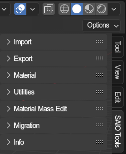
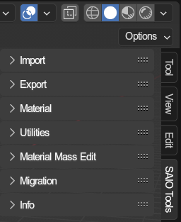

Toolbar Tools🔗︎

The addon provides a lot of tools, all of which can be accessed through the panels in this 3D View toolbar.
the toolbar encompasses following panels:

The addon provides a lot of tools, all of which can be accessed through the panels in this 3D View toolbar.
the toolbar encompasses following panels: